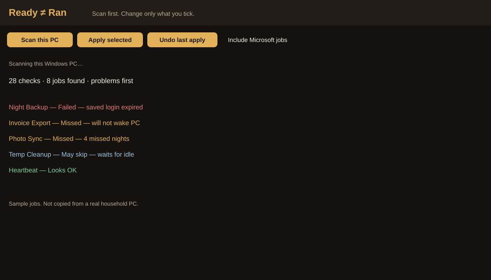

Ready ≠ Ran in action
Four stills of the product. These are mock frames, not a recording from someone’s PC. Open the sample report for the HTML dashboard.
1 · Scan

2 · Problems first

3 · Tick settings and confirm

4 · Undo from backup

Four stills of the product. These are mock frames, not a recording from someone’s PC. Open the sample report for the HTML dashboard.
